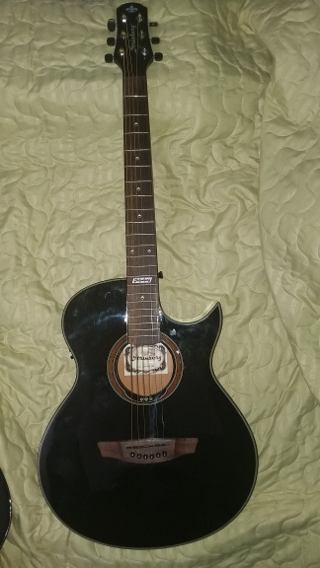

<ion-header>
  <ion-toolbar color="secondary">
      <ion-buttons slot="start">
        <ion-button routerLink="../inicio"><ion-icon name="arrow-round-back" color="light"></ion-icon></ion-button>
      </ion-buttons>
      <ion-row>
        <ion-col size="5">
    <ion-title color="light" class="texto">Anúncio</ion-title>
  </ion-col>
  <ion-col size="7">
      <ion-icon class="icone-heart" name="heart"></ion-icon>
      <ion-icon class="icone-share" name="git-compare"></ion-icon>
    </ion-col>
    </ion-row>
  </ion-toolbar>
</ion-header>

<ion-content color="primary">
  <ion-card class="fundo"> 
    <ion-card-header>
      
      <ion-card-subtitle>Publicado em 17/11/2020 por Rafael Monteiro</ion-card-subtitle>
      <ion-card-title><b>Violão Strinberg aw53c BK Acústico</b></ion-card-title>
      <hr>
    </ion-card-header>
    <ion-card-content>
      Descrição<br><br>
      Troco Violão Strinberg por gaita de fole importada diretamente da Escócia.<br><br>
  <ion-button class="contato" color="primary" shape="round"><b>Entre em Contato</b></ion-button>
  <ion-button class="visitar" color="primary" shape="round"><b>Visitar Perfil do Anunciante</b></ion-button>
    </ion-card-content>
  </ion-card>
</ion-content>
